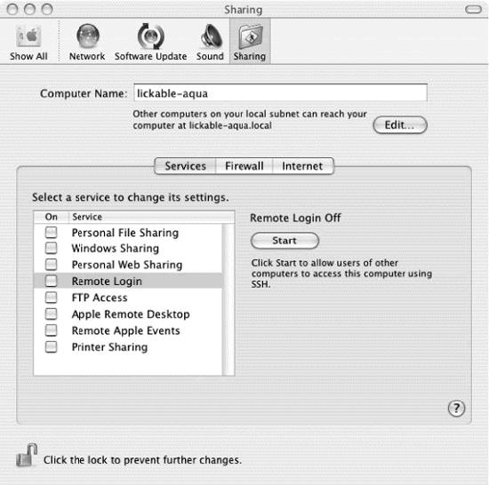

SSH server startup is controlled from the Sharing pane in System Preferences, under Services, as in Figure 15-1. To enable sshd, select Remote Login and click the Start button.

Figure 15-1. Enabling the SSH server in System Preferences